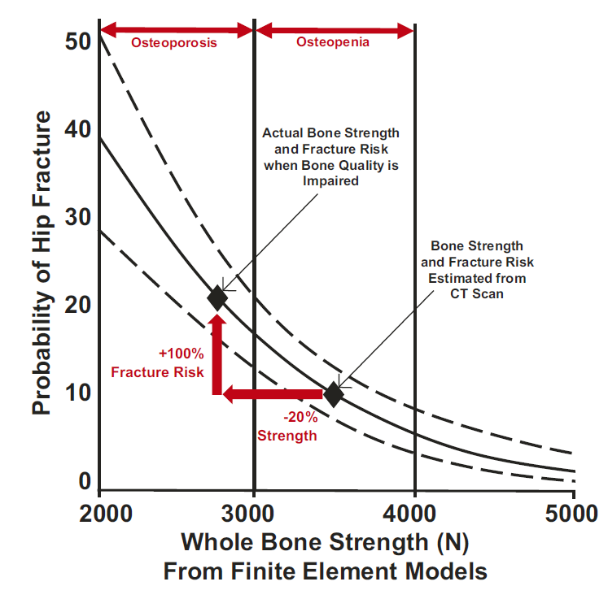

Intravital Imaging and Biomechanics


Objectives & Contributions
- Led research programs investigating mechanosensitive signaling in bone/nervous systems while generating findings that advanced understanding of neurotransmitter regulation, mechanoadaptation, and disease-relevant physiology.
- Pioneered a multimodal imaging and computational pipeline to uncover a previously unknown signaling axis between the peripheral nervous system and bone structure, supporting the validation of new drug targets for anabolic bone therapies.
Technical Highlights
- Developed and implemented multimodal imaging and signal-processing pipelines, enabling quantitative analysis of calcium signaling, electrophysiological behavior, and tissue-level response across large biological datasets (225GB+).
- Applied specialized 3D reconstruction and image processing (stitching, denoising, correction, and filament tracing) to >300GB of Light-Sheet Microscopy data for whole-bone tissue. This system enabled the semi-automated identification and spatial quantification of nerve networks, demonstrating close proximity to target cells.
- Utilized targeted genetic mouse models to demonstrate that disrupting this receptor signaling pathway impaired the bone's normal anabolic response to mechanical loading, reducing bone formation metrics by 60–90%
Leadership Highlights
- Led multi-year research initiatives while managing laboratory operations, mentoring multidisciplinary teams, securing external funding, and collaborating with academic and clinical stakeholders to advance reproducible, data-backed discovery.
- Contributed toward securing $600K+ in competitive research funding from the NSF as a result of dissemination in high-impact research and clinical channels.
- Oversaw and mentored 7 undergraduate/graduate researchers, providing training/coaching in experimental design, data analysis, and scientific communication while fostering a collaborative, performance-oriented culture.
- Produced two peer-reviewed publications and three podium talks across national and international levels, including the World Congress of Biomechanics while translating complex biological phenomena into widely adopted scientific insight
Skills
Mechanobiology & Translational Research
Advanced Imaging & Computational Analysis
Large-Scale Biological Data Modeling
Research Program Leadership & Mentorship
Scientific Communication & Publication Strategy
Experimental Design
MATLAB
ImageJ/Fiji
Signal Processing
Statistical Modeling
Microscopy Instrumentation
Publications & Links
Awards
- 🥇National Academies Ford Foundation Fellow
- 🏅 Bouchet Graduate Honor Society
- 🏅 Kappa Delta Travel Award – Orthopedic Research Society
- 🥇 Young Investigator Award – Musculoskeletal Repair & Regeneration Symposium
- NSF Graduate Research Fellowship, Honorable Mention
Gut Microbiome Effects on Bone Strength


Objectives & Contributions
- Assumed research role at the intersection of biomedical engineering, mechanobiology, imaging, and computational analysis, driving experimental programs from hypothesis development through publication and translational insight.
- Researched the signaling axis between the gut microbiome and bone material properties, identifying novel drug targets for anabolic bone therapies.
Technical Highlights
- Applied statistical modeling and analysis to identify clinically relevant effects, including 20% decreased bone strength linked to gut microbiome disruption
- Designed automated 3D reconstruction and analysis workflows for micro-CT 100GB+ datasets while accelerating throughput, improving reproducibility, and enabling scalable cross-study comparison
- Quantified the mechanical consequences of gut microbiome alteration to assess bone strength, indicating a pathological shift toward tissue material properties
Leadership Highlights
- Worked cross-institutionally with academic and community partners to integrate experimental bone biomechanics, imaging, and computational methodologies while advancing shared research objectives and translational relevance.
- Contributed toward securing $500K+ in competitive research funding from the NIH as a result of dissemination in field-specific research and clinical channels.
- Oversaw and mentored 6 undergraduate researchers, providing training/coaching in experimental design, data analysis, and scientific communication while fostering a collaborative, performance-oriented culture.
Skills
Experimental Design
Statistical Modeling
Mechanobiology & Translational Research
Advanced Imaging & Computational Analysis
Large-Scale Biological Data Modeling
Scientific Communication & Publication Strategy
Publications & Links
Accomplishments
- 📄 Authored three peer-reviewed publications
- 🎤 Authored three national conference presentations.